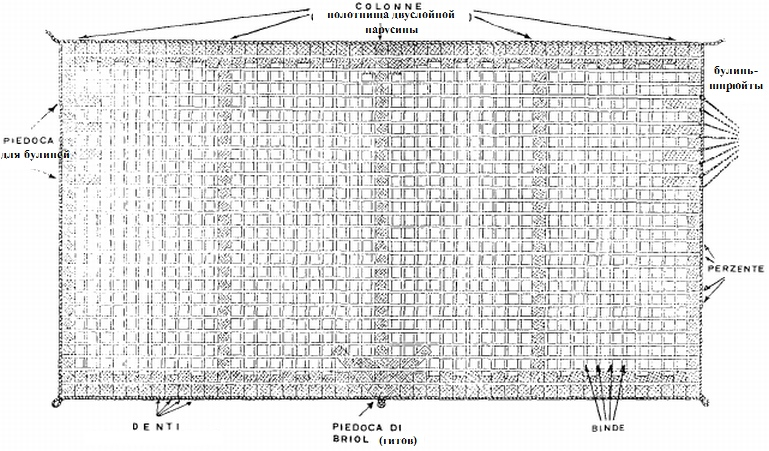
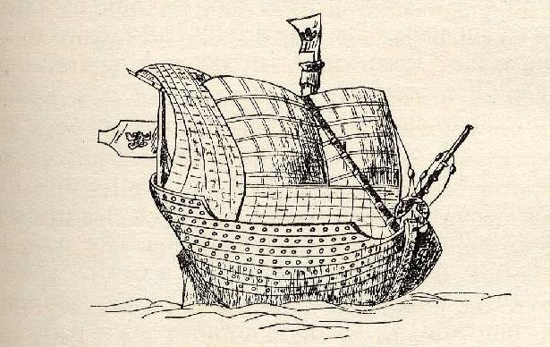

Венецианский ког: паруса
«…что вдалеке твой взор распознает?
Что с мачты видишь…»
― «Я вижу бесконечность!»
В. Г. Тепляков. Вторая фракийская элегия
Прежде чем рассказывать об оставшихся снастях бегучего такелажа венецианского кога, уделим немного внимания самому прямому парусу. Его подробно описал в упомянутой выше статье Сержио Беллабарба.

Парус венецианского кога. Реконструкция Сержио Беллабарба.
Все прямые паруса, о которых говорится в трактате Fabrica di Galere, имеют одинаковое соотношение ширины и высоты. Изготовлены они из полотнищ грубой хлопчатобумажной ткани fustagno (ширина каждого полотнища – 1/3 пассо, или 58 см), поверх этих полотнищ нашиты для усиления ленты из пеньки в виде правильной решетки (binda в вертикальном направлении и perzente – в горизонтальном). Ленты были расположены так, чтобы перекрывать швы основного полотнища. Их получали, разрезая на три части «стандартное» пеньковое полотнище, т.е. ширина каждой ленты была около 19 см (в трактате Timbotta из Британского музея говорится, что горизонтальные ленты (perzente) были более узкими – 14-15 см). Именно эти ленты придавали парусам их характерный вид, который мы встречаем на изображениях тех лет. Причем, очевидно, любители прекрасного среди моряков той эпохи подкрашивали ленты или само полотнище в контрастные цвета.

Венецианский двухмачтовый ког
Основное полотнище паруса имело более сложную структуру, чем мы описали выше. Во-первых, это относится к структуре материала, из которого его шили. Если мы посмотрим сегодняшние значения термина fustagno, то получим лишь одно – бумазея, т.е. хлопчатобумажные ткани с начесом на одной из сторон. Но в период, когда создавалась Fabrica di Galere, дело обстояло несколько иначе. Европа, в том числе и Венеция, в изготовлении парусов только-только начинала переход к хлопчатобумажным тканям. Переход этот осуществлялся под влиянием арабов, которые уже давно и успешно перешли от льняных и пеньковых парусов к хлопчатобумажным. Вместе с тканями европейцы получили и арабскую терминологию в этой области. Все хлопчатобумажные ткани на итальянских фабриках делились на две категории: pignolati и fustagni. Про этимологию термина pignolati ничего определенного мы сказать не можем, термин же fustagno имеет вполне определенные арабские корни: первоначально так называли тяжелую хлопчатобумажную ткань с основой из льняных нитей. Сейчас фустан – это женское платье, а раньше была почти рогожа.
Если рассмотрим процесс изготовления паруса, то увидим, что начинали его шить с центрального полотнища – «колонны» (colonna) – вместо основной ткани ее изготавливали из двухслойной пеньки. Именно к этому полотнищу на центральной линии паруса слева и справа добавляли по 11 (для кога с длиной киля 16 пассо) полотнищ fustagno. Затем снова пришивали по одной «колонне», к которым вновь слева и справа симметрично было по 11 полотнищ основного материала. И, наконец, пришивали еще по одной «колонне» по краям, которые уже формировали боковые шкаторины паруса.
На верхнюю и нижнюю кромки паруса также нашивали ленты из пеньки (боуты и банты), причем размеры их были не одинаковы, а более длинные чередовались с более короткими. По этой причине назывались они «зубы» (denti). И еще один вид усиления кромок паруса проводили в местах крепления снастей управления парусом, таких как булини. Эти усиления имели V-образную форму и назывались piedoca – «гусиные лапы». По периметру полотнище паруса обшивали ликтросом – диаметр его на верхней шкаторине был 3,3 см, а на боковых и нижней – по 3,7см.
В нижних, шкотовых, углах паруса из ликтроса формировались петли для крепления шкотов и галсов.В классическом варианте назначение этих снастей ясно: шкоты растягивают нижние углы прямого паруса (а мы ведем сейчас речь только о прямых парусах) по направлению к бортам и корме; галсы работают только с наветренными кромками парусов, оттягивая их нижние углы к носу. Т.е. видно, что они действуют в противоположные друг другу стороны. Это заметно и по обозначающим их венецианским терминам: scote и contrascote. Кстати, это тот из немногих случаев, когда морской термин пришел в латинский язык с севера.
Длина шкота, как указано в трактате Fabrica di Galere, должна быть в 1,25 раза больше длины судна между штевнями ('di roda in roda'). Очевидно, здесь идет речь о длине снасти одного борта. Ни о каких блоках в составе этой снасти в трактате не упоминается, так что скорее всего шкоты тянули и галсы садили вручную, без талей.
Продолжим в следующий раз.